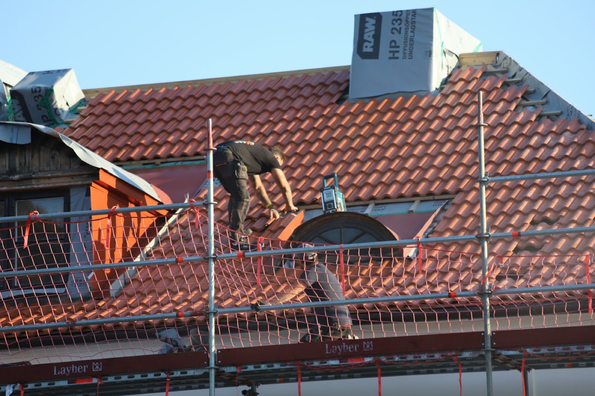
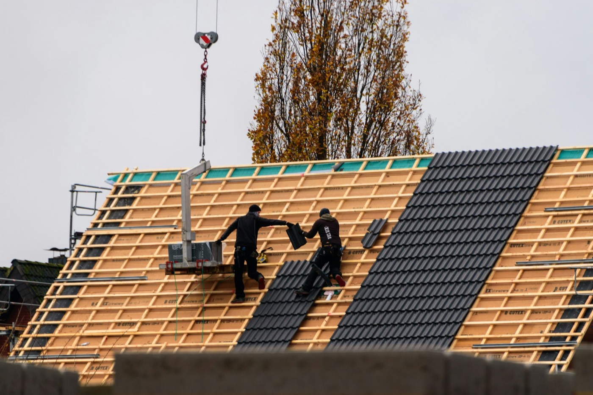
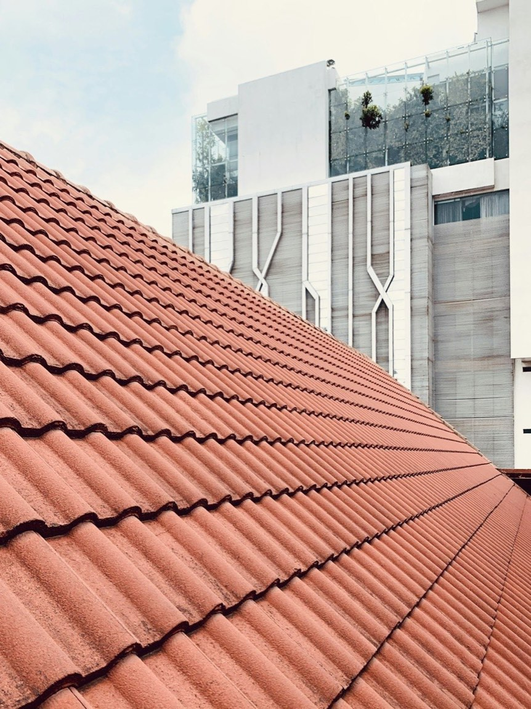
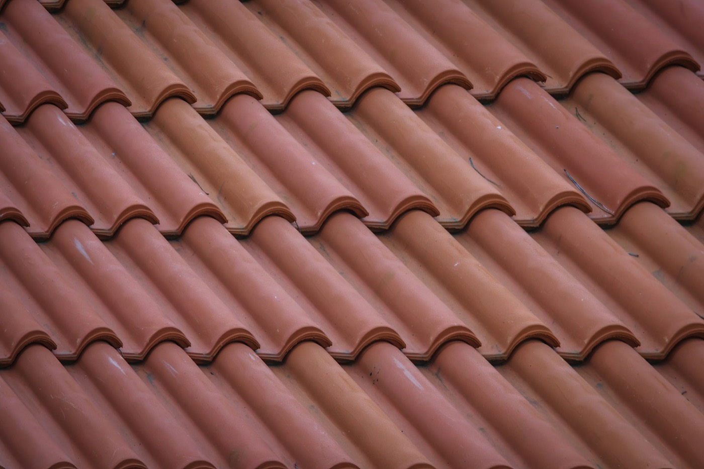

Torino · coperture e tetti
Tetti rifatti bene, sopra Torino.
Coperture, isolamento e rifacimento completo del tetto. Grp Costruzioni, da Via de Stefanis.
- Coperturerifacimento e manutenzione
- Isolamentodel tetto e del sottotetto
- Torino nordVia G. de Stefanis 25/E
- 5,0 su Googlerecensione di un architetto
01 · Cosa facciamo
Il tetto è il nostro lavoro.
Una sola specialità, seguita da vicino: il tetto che vi protegge, dalla struttura all'ultimo coppo.
-
01
Rifacimento completo del tetto
Si smonta il vecchio manto, si controlla la struttura, si rifà la copertura con gli strati giusti. Un tetto nuovo sopra la casa di sempre.
-
02
Coperture: riparazioni e manutenzione
Infiltrazioni, coppi rotti o spostati, un punto che gocciola dopo ogni temporale. Si sale, si guarda, si sistema.
-
03
Isolamento del tetto
Un tetto isolato bene tiene il caldo d'inverno e il fresco d'estate. Si posa l'isolante con la barriera al vapore e il telo traspirante.
-
04
Condomini e case
Dal tetto della villetta a quello del palazzo, con abbaini e comignoli. Il lavoro si concorda con voi o con l'amministratore.
02 · Il tetto, strato per strato
Quello che non si vede, fatto bene.
- 01Travi e tavolatoLa struttura, controllata prima di tutto.
- 02Barriera al vaporeTiene l'umidità di casa fuori dall'isolante.
- 03IsolanteLo strato che fa la differenza in bolletta.
- 04Telo traspiranteFerma l'acqua, lascia uscire il vapore.
- 05Listelli e ventilazioneUn filo d'aria sotto il manto.
- 06CoppiIl manto, corso dopo corso.
06 Coppi
03 · Cantieri
Dal ponteggio al colmo.
Trascinate per scorrere. Qui vanno le foto dei vostri tetti a Torino.



04 · Chi siamo
Al telefono risponde Piero.
Grp Costruzioni srl lavora dalla sede di Via Giovanni de Stefanis, nella zona nord di Torino. Il lavoro è uno: coperture, isolamenti e rifacimento dei tetti, seguiti da chi poi sale sul tetto.
Chi ci chiama parla con Piero, che viene a vedere, spiega cosa serve e cosa si può lasciare com'è.
Ho avuto modo di collaborare con Piero per diversi anni e l'esperienza è sempre stata positiva. È un professionista serio, competente e disponibile, con un'ottima esperienza nel settore, in particolare nelle coperture, negli isolamenti e nel rifacimento dei tetti.
05 · Come lavoriamo
Quattro passi, dal sopralluogo al tetto pulito.
- 01
Sopralluogo
Si sale a vedere il tetto e il sottotetto. Foto, misure, le domande giuste.
- 02
Preventivo scritto
Cosa si fa, con quali materiali, in quanto tempo. Voce per voce.
- 03
Cantiere in sicurezza
Ponteggio, linee vita dove servono, casa protetta sotto.
- 04
Consegna
Tetto finito, grondaie libere, cantiere pulito. Vi mostriamo tutto.
06 · Contatti
Il tetto vi preoccupa? Chiamate.
Un sopralluogo costa una telefonata. Diteci dove siete e cosa vedete: macchie sul soffitto, coppi spostati, un tetto da rifare.
- Telefono e WhatsApp329 198 6858
- SedeVia Giovanni de Stefanis 25/E
10148 Torino